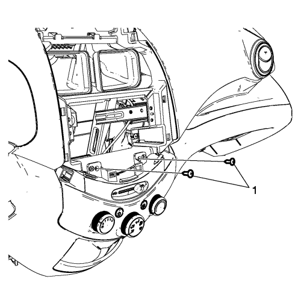
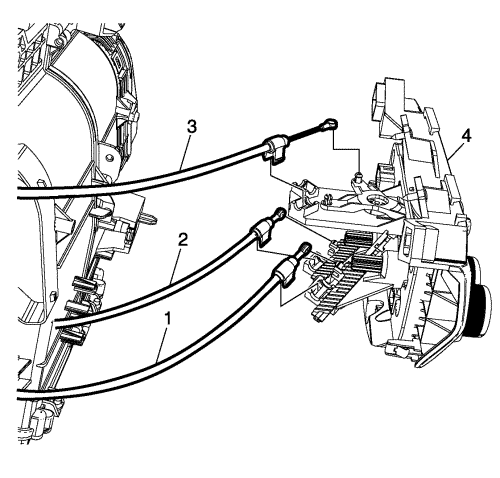

Sustitución del control del aire acondicionado y la calefacción — Volante a la derecha
Procedimiento de desmontaje
Advertencia : Consulte Advertencia sobre la desconexión de la batería en la sección Prólogo
- Desconecte el cable de batería negativo. Consultar Desconexión y conexión del cable de batería negativo .
- Desmonte el compartimento del panel de instrumentos (P/I). Consultar Sustitución del compartimento del panel de instrumentos .
- Desmonte la radio. Sustitución de la radio .

- Desmonte los tornillos (1) del control del aire acondicionado (A/C) y la calefacción.

- Desmonte el control del A/C y la calefacción (4) tirando de él hacia fuera a fin de dejar espacio para desmontar los cables.
Nota: Anote la ubicación de los cables para facilitar su reinstalación.
- Desconecte el cable del control de la temperatura (1), el cable del control de modo (2) y el cable del control de entrada de aire (3).
- Desconectar los conectores eléctricos.
Procedimiento de montaje
- Enchufe los conectores eléctricos.
- Conecte el cable del control de la temperatura (1), el cable del control de modo (2) y el cable del control de entrada de aire (3) al control del A/C y la calefacción (4).
- Monte el control del aire acondicionado y la calefacción (4) introduciéndolo en la posición apropiada en el panel de instrumentos.
Atención: Consulte Precaución con las fijaciones en la sección Prólogo
- Monte los tornillos del control del A/C y la calefacción (1) y apriételos a 2,5 N·m (23 lib. pulg.).
- Monte la radio. Consultar Sustitución de la radio .
- Monte el compartimento del P/I. Consultar Sustitución del compartimento del panel de instrumentos .
- Conecte el cable negativo de la batería. Consultar Desconexión y conexión del cable de batería negativo .
| © Copyright Chevrolet Europe. All rights reserved |